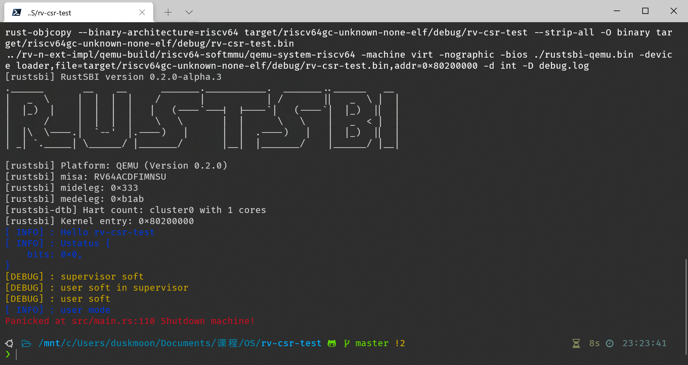

软硬协同的用户态中断
目标
本项目旨在提供一种符合 RISC-V 用户态中断扩展规范（草案） 的模拟器和 FPGA 实现，并基于用户态中断在内核中实现优化的信号和 io_uring 等跨进程通信机制，展示其设计和性能优势。
项目设计
项目架构设计如下：

- 模拟器：修改 QEMU 5.0，在其中添加 N 扩展支持
- FPGA：基于中科院计算所的标签化 RISC-V 架构，添加 N 扩展支持
- 启动器与 SBI：在 FPGA 平台上使用基于 RustSBI 开发的 lrv-rust-bl ，在 QEMU 上 uCore-SMP 系统使用 OpenSBI ，rCore 系统使用 RustSBI
- 操作系统：选择 uCore-SMP 和 rCore
文件结构
.
├── README.md
├── docs docs in mdbook structure
├── qemu qemu modified by Campbell He
└── qemu-build Where we recommend building qemu here
开发进展
QEMU 与 FPGA
- 在 QEMU 中添加 N 扩展支持
- 在 FPGA 开发板上部署标签化 RISC-V 架构
- 增加 N 扩展的 Chisel 代码
操作系统
- rCore
- 添加 N 扩展支持
- 适配 FPGA 平台
- 适配标签机制
- 实现信号机制
- 实现 io_uring
- uCore-SMP
- 添加 N 扩展支持
- 适配 FPGA 平台
- 适配标签机制
- 实现信号机制
- 实现 io_uring
应用程序
- 验证 N 扩展正常工作
- 信号机制测例
- io_uring 测例
硬件与模拟器
本节介绍硬件与模拟器中实现的主要特性
QEMU with extension N
出于稳定性考虑，我们选择以 QEMU 的 5.0 稳定分支 为基础，添加用户态中断所需的寄存器和相应的中断处理函数。
- 添加寄存器
ustatusuipuiesidelegsedeleguepcutvecucauseutvaluscratch - 添加用户态中断的触发部分：符合条件时使用上述处理器进入中断状态
- 实现
uret指令
一个使用修改后的 QEMU 进行的用户态中断的简单测试结果：

图中的 user soft 为用户态的中断处理程序接收到 user soft interrupt 后输出的信息，user mode 为用户态程序输出的信息。
N 扩展实现简述
QEMU 的中断检测方式为每个 block 运行前后调用 riscv_cpu_local_irq_pending 函数。其中会查看 mip 是否非零，非零位对应的 mie 是否非零。同时检查特权级和相应的 mideleg medeleg 寄存器与 mstatus.XIE 的全局中断使能位。
Labeled RISC-V CPU
设计目标
本设计将 uCore-SMP 系统适配到标签化 RISC-V 架构的 FPGA 版本上，并基于二者在内核中实现调度进程所使用的 LLC 和内存带宽资源的功能，提供相应的接口和演示程序，对资源调度的效果进行展示。
设计方案
硬件
设计使用标签化 RISC-V 架构的 FPGA 版本和赛灵思公司的 ZCU102 开发板，搭载一颗 Zynq® UltraScale+™ XCZU9EG-2FFVB1156E MPSoC 。该芯片的处理系统（PS）部分具有四个 Arm A53 核心，运行 Linux 系统，主要功能为烧写 FPGA 比特流，辅助其复位和启动，并转发串口数据。可编程逻辑（PL）部分实现为四个 Rocket Core，ISA 为 RV64IMAC，时钟频率 100MHz，具有 2MB 共享 L2 缓存和 2GB DRAM 。
标签化 RISC-V 架构在每个核心上添加了一个 CSR 记录当前核心上正在运行的程序的标签，并使用该标签标记程序的资源请求。该寄存器编号为 0x9C0 ，访问权限为 S 态可读写。标签控制平面以 MMIO 形式映射到 0x20000 地址，可以向其中写入标签的缓存和内存控制参数，并读取标签对应的 L1 到 L2 的流量。
L2 缓存被划分为 16 块，使用位掩码对标签对应进程可用的缓存区域进行控制，若某位为 1 ，则表示该进程可以使用该块缓存；反之则不能。若某块缓存在多个标签的掩码中均为 1 ，则该块缓存由这些标签对应的进程共享。
内存带宽使用令牌桶算法进行控制。每个标签有一个令牌桶，控制器每隔 freq 个时钟周期会向桶中放入 inc 个令牌，桶的容量为 size ，当令牌数量达到桶容量时，令牌数量不再增加。一个令牌对应 64 比特的数据量，进程每次发起一次内存读写请求，会消耗标签令牌桶中相应数据量的令牌，当桶中没有令牌时，请求会被挂起。当进程持续访问内存时，其最大内存带宽近似为 \(inc\cdot{clock\over freq}\cdot 64 ,\mathrm{bps}\) 。
固件：lrv-rust-bl
该部分基于 RustSBI 的 QEMU 参考实现进行开发，使用 Rust 语言编写。PL 所用串口外设为 UART Lite，与 QEMU 中所用的 NS16550A 不同，需要重新实现其初始化和收发代码。
该 RISC-V 核心不支持非对齐 load/store 指令，此类指令会触发相应的非对齐异常，但同时内核和应用程序中又无法完全避免这些指令，为了实现二者的兼容，固件在相应的异常处理例程中解码触发异常的指令，根据其选择的寄存器和非对齐地址偏移量，使用两次对齐的 load/store 进行模拟。需要注意的是，该平台同时支持压缩指令（C）扩展，因而指令长度可能为 2 或 4 字节，指令本身可能处于非对齐地址上，且 load 和 store 各有三种（常规指令、基于通用寄存器中地址的压缩指令、基于栈指针寄存器中地址的压缩指令），指令格式不尽相同，解码过程较为繁琐。
该启动器代码仓库位于 https://github.com/Gallium70/lrv-rust-bl ，对该启动器更详细的介绍见代码仓库中相应的文档。
N 扩展
目前此扩展的讨论基于 M/S/U 的三特权设计
用户态中断与异常的执行流程

中断的产生
与 M 态和 S 态类似，中断分为软件中断 (Software Interrupt)、时钟中断 (Timer Interrupt) 和外部中断 (External Interrupt)。
之后为了方便，三类中断会简称为 xSI、xTI、xEI，其中 x 为特权级。
当中断发生时，通过硬件机制设置 uip 寄存器中的 UXIP 位 (X 表示中断种类) 为 1。硬件检测发现 uip 非零，于是进入中断的判断流程。
首先，检查该中断是否被允许发生，即检查 uie.UXIE 是否为 1。如果为真，再检查该中断是否被委托给用户态处理，即检查 sideleg 寄存器中对应的位。如果仍为真，检查全局中断使能是否为真，即检查 ustatus.UIE 是否为 1。如果还为真，则触发中断处理的流程。
注意
上述寄存器中，
uieuip为miemip的子集，即读写会同时作用于所有的xipxie或它们本就是同一寄存器。而ustatus至少UIE和UPIE与mstatus中的相同位相同。虽然上述中断产生的流程中有判断次序，实际实现中一般使用组合逻辑，将寄存器值进行位与来判断，可以认为是同时判断的。
异常的产生
当异常发生时，硬件只检查 sedeleg 寄存器中对应的位是否为 1，若为真则触发异常的处理流程。
在 RISC-V 中，中断和异常的处理流程是统一的，下面出于描述简单考虑，多数情况下围绕中断进行描述。
中断的处理
在上述的产生流程后，处理器开始进行一些预处理：
- 设置
ustatus.UPIE为ustatus.UIE的值，并置ustatus.UIE为 0 - 根据中断类型设置
ucause - 设置
uepc为发生中断或异常时的pc - (可选) 设置
utval - 根据
utvec的最低二位和高位的基地址，跳转到设置好的中断处理程序
中断处理程序需要完成以下工作：
- 保存现场
- 如果
utvec为 direct 模式，根据ucause执行相应的处理程序 - 如果
utvec为 vector 模式，执行处理程序 - 恢复现场
需要保存和恢复的现场有
- x1-x31 寄存器 (如果确定中断处理程序中不会使用到某些寄存器，可以省去保存和恢复)
ustatus(可能需要通过修改ustatus来改变 CPU 状态)uepc(可能需要通过修改进一步触发 S 态的中断/异常)- 我们尚未注意到的但需要保存和恢复的寄存器

N 扩展的 CSR
WPRI: 该段数值保留为以后使用，欲读取该位时得到合法的值，即 0
ustatus
UXLEN-1 5 4 3 1 0
┌────────┬──────┬──────┬─────┐
│ WPRI │ UPIE │ WPRI │ UIE │
└────────┴──────┴──────┴─────┘
UXLEN-5 1 3 1
ustatus 是一个 UXLEN 位长的读写寄存器，记录和控制硬件的工作状态。
用户态中断使能位 UIE 为零时阻止用户态中断的发生。为了向用户态陷入处理程序提供原子性， UIE 中的值在用户态中断被处理时复制到 UPIE 并被置为零。
UIE 和 UPIE 是 mstatus 和 sstatus 中对应位的镜像。在硬件实现中三者可以是同一寄存器。
指令 URET 用于从陷入状态返回用户态。URET 将 UPIE 复制回 UIE，然后将 UPIE 置位，最后将 uepc 拷贝至 pc。
用户态中断只能在用户态触发，所以不需要 UPP 位。
uip uie
uip 和 uie 均为 UXLEN 位的读写寄存器，其中 uip 存储等待处理的中断信息， uie 存储相应的中断使能位。
| WPRI | UEIP | WPRI | UTIP | WPRI | USIP |
| WPRI | UEIE | WPRI | UTIE | WPRI | USIE |
定义三种中断：软件中断、时钟中断、外部中断。用户态软件中断通过置位当前的 hart 的 uip 的软件中断等待 (USIP) 来触发。清零该位可以取消等待中的软件中断。当 uie 中的 USIE 为零时，用户态软件中断被禁止。
ABI 应当提供一种向其他 hart 发送处理器间中断的机制，这最终将置位接收 hart 的 uip 寄存器的 USIP 位。
除了 USIP， uip 中的其他位在用户态是可读的。
如果 uip 寄存器中的 UTIP 位被置位，一个用户态定时器中断将进入待处理状态。当 uie 寄存器中的 UTIE 位被置零时，用户态定时器中断被禁用。ABI 应该提供一个机制来清除一个待定的定时器中断。
如果 uip 寄存器中的 UEIP 位被置位，一个用户态外部中断将进入待处理状态。当 uie 寄存器中的 UEIE 位被置位时，用户态外部中断被禁用。ABI 应该提供屏蔽、解除屏蔽和查询外部中断原因的机制。
uip 和 uie 寄存器是 mip 和 mie 寄存器的子集。读取 uip/uie 的任何字段，或者写入任何可写字段，都会对 mip/mie 的相应字段进行读取或写入。如果系统实现了 S 模式，uip 和 uie 寄存器也是 sip 和 sie 寄存器的子集。
sedeleg sideleg
为提升中断和异常的处理性能，可以实现独立的读写寄存器 sedeleg 和 sideleg，设置其中的位将特定的中断和异常交由用户态陷入处理程序处理。
当一个陷入被委托给一个权限较低的模式 u 时，ucause 寄存器被写入陷阱的原因；uepc 寄存器被写入发生陷阱的指令的虚拟地址；utval 寄存器被写入一个特定的异常数据；mstatus 的 UPIE 字段被写入陷阱发生时 UIE 字段的值；mstatus 的 UIE 字段被清零。mcause/scause 和 mepc/sepc 寄存器以及 mstatus 的 MPP 和 MPIE 字段不被写入。
一个实现不应硬性规定任何委托位为一，也就是说，任何可以被委托的陷阱都必须支持不被委托。一个实现方案是选择可委托的陷入的子集。支持的可委托位可通过向每个比特位置写 1，然后读回 medeleg/sedeleg 或 mideleg/sideleg 中的值，看看哪些位上有 1。
目前，不支持触发低权限级的陷入
不会在用户态发生的应硬件恒零，如 ECall from S/H/M-mode
uscratch
uscratch 寄存器是一个 UXLEN 位读/写寄存器。
uepc
uepc 是 UXLEN 位读写寄存器。最低位（uepc[0]）恒零。次低位 uepc[1] 视实现的对齐需求而定。
uepc 是 WARL 寄存器，应能存储所有的合法物理/虚拟地址，但不需要能挣钱存储非法地址。实现可以先将非法地址转为其他非法地址再写入 uepc。
但陷入在用户态处理时，uepc 被写入中断或触发异常的指令的虚拟地址。此外，除了软件显式地写，否则 uepc 应永不被写。
ucause
| Interrupt | Exception Code WLRL |
ucause 是 UXLEN 位长读写寄存器。
utvec
| BASE[UXLEN-1 : 2] | MODE |
utvec 是 UXLEN 位长读写寄存器，存储陷入向量，包括向量基地址和向量模式。
BASE 是 WARL，可以存储任意合法的虚拟地址或物理地址，需要 4 字节对齐。特殊的模式可以有其他对齐标准。
| value | name | description |
|---|---|---|
| 0 | direct | base |
| 1 | vectored | base + 4 * cause |
| reserved |
utval
存储内容仍在讨论中
N 扩展的指令
URET
uret 将 pc 设置为 uepc ，将 ustatus.UIE 设置为 ustatus.UPIE ，从而恢复中断前的状态。
用户态中断的使用
本节描述构想中的用户态中断的使用，部分功能细节仍在进一步讨论中
需要解决的问题
在一个成熟的操作系统中，同时运行的用户态进程数量是十分庞大的。在传统的实现方案中，这些用户态进程互相之间通信或与外设通信都需要经过内核态，这造成了大量的页表切换等颇具开销的行为。如果可以让用户态进程自己处理不需要内核态权限的中断，应能减少相应的开销，使得操作系统的性能得到提升。
此外，许多需要用户态进程处理的中断并不需要即时处理，引入用户态中断的机制可以在用户态进程被调度的时候再触发，减少对执行情况的干扰。
陷入信息表
为解决用户态进程数量过多且不同用户态进程有不同的用户态中断处理程序和中断信息，需添加进程的“陷入信息表” (Trap Information Table, TIT)。其结构和进程控制块的关系如下图：
内核态维护一个先入先出的“陷入信息队列”，当有新的陷入信息时，将其添加至队列的尾部；而在用户态进程被调度时，内核态检查发现有陷入信息时，将相应信息恢复至寄存器，并设置 uip 寄存器。在返回至用户态后，立即触发中断，进入用户态进程自己设定的用户态中断处理程序。
utval 寄存器存储中断的具体信息，其结构为：
+-----+------+-----------+
| TAG | TYPE | trap info |
+-----+------+-----------+
TAG 用于记录中断是传递给哪个进程，TYPE 用于进一步区分中断的类别，trap info 则存储中断的更为详细的信息。
中断的响应
即时的中断响应
用户态可能接收到并即时处理的中断有时钟中断、外部中断以及自行设置的软件中断。当中断发生时，会执行以下步骤：
- 硬件设置用户态寄存器。
- 检查将要写入
utval的值中的TAG是否为当前正在运行的进程。如果是，触发用户态中断，执行与恢复；如果不是，触发 S 态中断。 - 进入 S 态中断，根据
TAG将用户态 CSR 中的值存储在对应进程的TIT中，恢复并继续执行原用户态进程。该中断转为另一进程的“非即时中断”。
非即时的中断响应
一个进程存在非即时的中断需要响应，即在被调度时其 TIT 非空。操作系统依序执行以下步骤：
- 欲调度该进程，检查
TIT，发现存在需要处理的陷入信息。 - 内核态构造
trap frame，将trap info中的ucause和utval放入trap frame中，并设置uip中对应位，设置ustatus.UPIE。使用uret返回用户态 uret根据utatus.UPIE设置ustatus.UIE，用户态中断全局使能被开启。- 触发用户态中断，进入
utvec对应的用户态中断处理程序，保存现场。 - 查看
ucause和utval，选择对应的处理分支。 - 处理完成后，恢复现场，恢复用户态进程的运行。
应用示例
跨进程“信号”示例
假设在一个单核、支持 N 扩展的 CPU 上运行一支持用户态中断的操作系统，有进程 A 和进程 B，且有某种机制使它们互相知道彼此的 pid。
- 进程 A 执行
ecall，触发内核态中断，并通过寄存器a0-a7传递参数：跨进程信号，发送目标 B，传递信息0x1。 - 进入内核态中断处理程序
ecall分支，根据寄存器值判断为“跨进程信号”，开始构造 B 的trap info：- 构造
utval：| TAG::B_pid | TYPE::cross_process_signal | trap_info ( src_pid: A_pid, info: 0x1 ) | - 构造
uip：| 0x0 | USIP ( 1 ) | 0x0 |(挂起用户态软件中断) - 构造
ucause:0x8000_0000_0000_0000(用户态软件中断)
- 构造
- 将
trap info存入 B 的TIT，恢复 A 的运行。 - 时间片轮转或 A 主动让权，开始调度 B。
- 内核态检查
TIT非空，开始构建trap frame：- 根据
PCB中的Trap Context，设置寄存器x1-x31utvecuieustatusuepc - 从
PCB指向的TIT取出第一个trap info，根据内容设置寄存器utvaluipucause
- 根据
- 使用
uret恢复进入用户态：- 通过
pc = uepc恢复为上次运行时间片最后的pc - 通过
ustatus.UIE = ustatus.UPIE开启用户态中断全局使能，允许中断发生
- 通过
- 中断发生，跳转
utvec对应的用户态中断处理程序，保存现场。 - 通过查看
utval和ucause知道是来自 A 的跨进程信号，进入相应分支处理。 - 处理完毕，恢复现场，继续执行 B 进程。
操作系统
我们选择基于 TianhuaTao/uCore-SMP 和 rCore，加入用户态中断和标签的支持，完成软硬件的协同。
操作系统：标签化 uCore-SMP
uCore-SMP 在设计时目标平台为 QEMU ，将其移植到 FPGA 平台主要需要解决如下问题：内存布局、时钟周期、页表项属性和硬盘外设。移植完成后，还需添加对标签系统的支持。代码仓库位于 https://github.com/TianhuaTao/uCore-SMP/tree/label-riscv 。
内存布局
QEMU 中内存的起始地址为 0x80000000 ，而 FPGA 平台起始地址为 0x100000000 ，相应的内核启动地址也要调整到 0x100200000 ，这两个值需要在 memory_layout.h 和 kernelld.py 中进行修改。QEMU 中配置总内存空间为 128MB，而尽管 FPGA 平台有 2GB DRAM，由于内存带宽有限，uCore-SMP 在启动时又会将所有内存地址遍历并初始化。为了减少操作系统的启动等待时间，综合考虑内核和用户程序所需的内存空间，最终将可分配的内存限制在 32MB 。
时钟周期
QEMU 中 CPU 运行频率（即 cycle 寄存器的增加频率）为 3GHz ，而实时时钟（RTC）频率（即 time 寄存器的增加频率）为 12.5MHz ；FPGA 平台上 CPU 频率为 100MHz ，RTC 频率为 10MHz，需要在 timer.h 中修改。
页表项属性
根据 RISC-V 规范中虚拟内存章节的描述，页表项中有“已访问（A）”和“已修改（D）”两个标志位，对这两个标志位，规范允许两种处理方式：
- When a virtual page is accessed and the A bit is clear, or is written and the D bit is clear, a page-fault exception is raised.
- When a virtual page is accessed and the A bit is clear, or is written and the D bit is clear, the implementation sets the corresponding bit(s) in the PTE. The PTE update must be atomic with respect to other accesses to the PTE, and must atomically check that the PTE is valid and grants sufficient permissions. The PTE update must be exact (i.e., not speculative), and observed in program order by the local hart. Furthermore, the PTE update must appear in the global memory order no later than the explicit memory access, or any subsequent explicit memory access to that virtual page by the local hart. The ordering on loads and stores provided by FENCE instructions and the acquire/release bits on atomic instructions also orders the PTE updates associated with those loads and stores as observed by remote harts.
即直接触发页错误异常，或由硬件实现直接对页表项置位。FPGA 平台实现为前一种，而 QEMU 为后一种。这两个标志位主要应用于虚拟存储系统中的页面置换，而 uCore-SMP 中对此并无支持，简单起见，可修改 virtual.c ，在分配新的页表项并映射物理页时，直接将 A 和 D 置位。
硬盘外设
QEMU 中通过 virtio 提供了虚拟块存储设备，FPGA 平台中没有。在此情况下，为了仍然能够使用文件系统，陶天骅同学提供了虚拟磁盘接口和 ramdisk 功能，通过宏开关在编译期进行切换。系统初始化时， ramdisk 将在内存中开辟一块区域，并将其按照 nfs 格式进行初始化。
标签系统
在内核初始化时，将标签系统控制平面基址以恒等映射挂载到 0x20000 地址处，权限为内核可读写。读取和写入参数的方式为基址+偏移，偏移量单位为 32bit ，即需要将地址强制转换为指向 32 位无符号整数的指针类型。具体各参数的偏移量和写入方法见 dsid.c/h 。
目前该系统支持至多 8 个不同的进程标签。进程标签存储于进程控制块中，在程序上下文切换时，内核将标签写入相应的 CSR 。内核的进程标签硬编码为 0 。
内核提供三个和标签相关的系统调用：
int set_dsid(int pid, uint32 dsid);
int set_dsid_param(uint32 dsid, uint32 freq, uint32 size, uint32 inc, uint32 mask);
uint32 get_l2_traffic(uint32 dsid);
set_dsid将pid对应进程的标签设为dsid，若进程不存在，则返回 -1 ，否则返回 0 ；set_dsid_param设置dsid标签相应的令牌桶参数和缓存掩码，参数含义见“硬件”章节。只有非零的参数会被写入控制平面。get_l2_traffic读取dsid标签对应的 L1 和 L2 缓存之间的数据流量，单位为 64bit 。
与内核共同调试和 debug
标签系统开发过程中，主要查出内核中以下几个缺陷。
调度器初值
uCore-SMP 使用 stride 算法进行调度，在初始实现中，fork 产生的子进程的 stride 会置为 0 。在使用标签系统监测负载程序的缓存性能时，设置父进程每隔一秒输出一次信息。第一批负载表现正常，但启动第二波负载时，会出现直到负载运行结束父进程才会输出的情况。分析后发现，由于子进程 stride 为 0 ，而运行第二波负载时，父进程已有一定的 stride ，此时调度器会持续优先调度子进程，导致父进程陷入“饥饿”。解决方法为，将子进程的 stride 置为和父进程相同。
子进程回收内存泄露
初始实现中，若父进程没有使用 wait/waitpid 等待子进程结束，则子进程占用的内存和文件等资源在进程结束后不会被回收，当大量 fork 时会耗尽系统内存。为此，陶天骅同学在内核中加入了 reparent 机制，当进程退出时会检查其子进程，若子进程已退出则回收，否则将其父进程置为 NULL ；若退出的进程父进程为 NULL ，则立即回收自身占用的资源，这样解决了这一内存泄露问题。
syscall 中的悬垂指针
系统调用进入内核中 syscall 函数时，会保存进程的 trapframe 地址，在具体系统调用执行完成后，使用该地址中的 a0 寄存器保存系统调用的返回值。在运行标签负载时发现，当用户程序运行到 0x1070 地址（用户态下的虚拟地址）时会触发非法指令异常，stval 寄存器显示相应的指令值为 0 ，但查看相应程序的反汇编发现此处并非 0 。起初怀疑是固件中非对齐 load/store 模拟存在问题，导致加载用户程序时出现数据异常；尽管发现固件确实存在问题，但解决该问题后依然会触发非法指令异常。
后来使用内核中 pushtrace 工具在各处记录 0x1070 对应内存地址的数值发现，当执行 execv 系统调用时，会回收原有的 trapframe 内存页，该页可能被后续用于加载用户程序的代码段，程序分配的新 trapframe 的 a0 和 a1 寄存器会分别用于存储 argc 和 argv ；但 execv 执行完成返回 syscall 函数中时（其返回值总为 0 ），仍会使用旧的 trapframe 地址，而 a0 寄存器对应变量在 trapframe 中相应的偏移量即为 0x70 ，向其中写入 0 会破坏用户程序代码，导致错误。解决方法为，当系统调用为 execv 时，在 syscall 函数中不写入 trapframe->a0 。
应用程序
为了使用标签系统，测量和展示标签系统的控制效果，设计了以下几个用户态应用程序：sort、jammer、prime、monitor、dsid_demo。
sort
对 501202 个 32 位无符号整数，使用基数排序法进行排序，基为 65536 ，数据使用随机数生成器和固定的种子生成，并使用 sharedmem 作为动态申请内存的方式。每个进程会将自己的 pid 加入共享内存名字中，以确保多个负载不会申请到同一块共享内存。程序将自身的运行时间作为返回值，单位是毫秒。
这是一个内存密集型负载，消耗约 4.5MB 内存空间和 8MB/s 的内存带宽。
prime
计算 2 到 52021 之间质数的个数。使用朴素算法，对于每个数 x ，枚举 2 到 x/2 之间的数，判断是否能够整除 x，若能，则 x 不是质数。这是一个计算密集型负载，可以用于验证多核正常运行，且运行时间几乎不受内存带宽限制的影响。
jammer
这是一个干扰负载，在一个有 524288 个 32 位无符号整数的数组上随机进行读写，消耗内存带宽。申请内存的方式与 sort 程序相同，消耗约 2MB 内存空间和 8MB/s 的内存带宽。
monitor
一个监测系统资源使用状况的程序，监测的资源包括 CPU 使用率、可用内存空间、各进程的运行时间、状态和内存占用、各标签的 L1 和 L2 之间的流量。每隔一秒输出一次，运行十秒后退出。其中 CPU 、内存和进程使用设备文件抽象接口，标签流量使用 get_l2_traffic 系统调用。运行界面如下：

dsid_demo
本程序中内置了若干组令牌桶和缓存掩码参数用于分配给指定的负载，并执行 monitor 程序监测系统资源的使用情况。
使用方法为 dsid_demo app1 param1 [app2 param2 [app3 param3]] ，最多同时启动 3 个负载。例如， dsid_demo sort 2 prime 1 将为 sort 进程分配 2 号参数组，为 prime 进程分配 1 号参数组。由于可用的标签数量有限，同时为了方便监测起见，标签并不与参数组一一对应，而是为每个负载分配不同的标签，appX 的标签编号即为 X 。在上例中， sort 进程标签为 1 ，而 prime 进程标签为 2 。
各组参数具体的设计，是为了实现以下四种测试场景：
- 不调控
- 内存带宽 5M：5M，缓存 768K：768K
- 内存带宽 7M：2M，缓存 1280K：256K
- 内存带宽 8M：1M，缓存 1280K：256K
内置参数组如下（其中 size 参数值均为 0x800）：
| 编号 | freq | inc | cache mask | 备注 |
|---|---|---|---|---|
| 0 | 10000 | 40 | 0x000F | 用于内核进程和监测程序，内存带宽约 3MB/s ， 缓存 512K，与其他参数组隔离 |
| 1 | 100 | 100 | 0xFFF0 | 内存带宽不限，缓存 1536K |
| 2 | 7800 | 80 | 0xFFC0 | 内存带宽约 8MB/s ，缓存 1280K |
| 3 | 7800 | 10 | 0x0030 | 内存带宽约 1MB/s ，缓存 256K |
| 4 | 7800 | 80 | 0xFFF0 | 内存带宽约 8MB/s ，缓存 1536K |
| 5 | 7800 | 10 | 0xFFF0 | 内存带宽约 1MB/s ，缓存 1536K |
| 6 | 100 | 100 | 0xFFC0 | 内存带宽不限，缓存 1280K |
| 7 | 100 | 100 | 0x0030 | 内存带宽不限，缓存 256K |
| 8 | 9300 | 60 | 0x03F0 | 内存带宽约 5MB/s ，缓存 768K |
| 9 | 9300 | 60 | 0xFC00 | 内存带宽约 5MB/s ，缓存 768K |
| 10 | 9300 | 60 | 0xFFF0 | 内存带宽约 5MB/s ，缓存 1536K |
| 11 | 100 | 100 | 0x03F0 | 内存带宽不限，缓存 768K |
| 12 | 100 | 100 | 0xFC00 | 内存带宽不限，缓存 768K |
| 13 | 7800 | 70 | 0xFFC0 | 内存带宽约 7MB/s ，缓存 1280K |
| 14 | 7800 | 20 | 0x0030 | 内存带宽约 2MB/s ，缓存 256K |
| 15 | 7800 | 70 | 0xFFF0 | 内存带宽约 7MB/s ，缓存 1536K |
| 16 | 7800 | 20 | 0xFFF0 | 内存带宽约 2MB/s ，缓存 1536K |
成果示例
标签 RISC-V CPU 与 标签化 uCore-SMP
FPGA 平台内存带宽约 12MB/s ，测试场景如 “dsid_demo”章节 中所述。测试结果如下：
可见在存在干扰情况下，给排序程序分配内存带宽越多，其性能越接近不受干扰时的情形，显示出内存带宽调控的效果；当内存带宽 7:2 分配时，控制缓存性能较优，而 8:1 分配时，不控制缓存缓存性能较优，这可能是因为缓存的分配比例介于二者之间，8:1 分配时，若不控制缓存，排序程序对缓存的利用率可以高于 7:2 时。
后续优化方向
- 自动和闭环控制：将应用的服务质量需求描述自动转换为标签系统的控制参数，并不断监测调节，提高灵活性、准确性和鲁棒性；
- 延迟控制：增加对应用服务延迟的测量和监测机制，展示标签系统控制延迟波动、提高用户体验的功能；
- 适配更多资源和场景：如图形计算的算力和存储、分布式系统中跨结点的标签传递、嵌入式平台中的实时性保证；
- 更多启动器功能：添加 Remote Fence、Hart 状态管理等 SBI 扩展，为操作系统提供更完善的支持。
参考
- RISC-V Instruction Set Manual
- cgroups(7) — Linux manual page
- 英特尔 ® 资源调配技术 (英特尔 ® RDT)
- Arm Architecture Reference Manual Supplement Memory System Resource Partitioning and Monitoring (MPAM), for Armv8-A
- Labeled RISC-V: A New Perspective on Software-Defined Architecture
- uCore-SMP GitHub 仓库
- labeled-RISC-V GitHub 仓库
- Zynq UltraScale+ MPSoC ZCU102 Evaluation Kit
- Rocket Chip Generator
- 令牌桶工作原理
- RustSBI GitHub 仓库
- AXI UART Lite v2.0 LogiCORE IP Product Guide
- RISC-V Page-Based Virtual-Memory Systems
- 在 FPGA 上复现标签化 RISC-V 架构——踩坑指南
- Labeled RISC-V Rust Bootloader GitHub 仓库
- 标签化 uCore-SMP GitHub 仓库
- labeled-RISC-V-boot GitHub 仓库